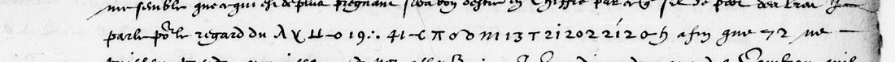
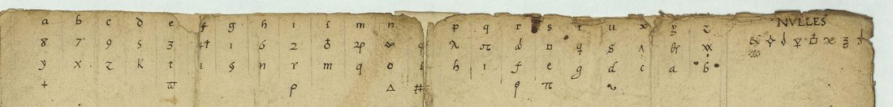

01 The letter

The copy (BnF notice: “Lettre, avec chiffre, de Louis de Gonzague, duc de Nevers, à monseigneur de Villeroy… De St Quentin, ce 16 aoust 1595. Copie”) runs over three pages in a secretary’s hand. Nevers was commanding in Picardy after the fall of Doullens (31 July); Fuentes had opened the siege of Cambrai, held by Balagny, a few days before. The letter is about the relief of Cambrai: a convoy that must risk “ung grand combat”, the people of the town who will not hold, the need to assemble the council. Nevers opens with a reproach that explains the cipher:
Vous faictes beaucoup pour le service du Roy a escrire assez intelligiblement … mais il me semble que ce qui est de plus pregnant seroit bon d’estre en chiffre, par ce que s’il se perdoit des lettres … pour le regard du [cipher] affin que 72 ne puissent prendre cognoissance de noz affaires.

The other runs sit in the same way inside clear sentences: “dans lequel temps il faut se resoudre de […] contre […]” (f. 148v), “et croy que […], pour faire donc telle chose il faut assembler le conseil” (f. 148v), “aussy tost que […]. Et a moy advis” and “et si luy ne parle […], je le doibs declarer” (f. 149r). The copy ends “De St Quentin ce 16. Aoust 1595”.
02 The cipher
The 753 symbols (measured on the transcription, ct_f148r.txt and ct_f148v_149r.txt) are of 54 kinds. Figures make up more than half: 1 occurs 112 times, 2 92 times, a small circle (letter o or figure 0; the copy does not distinguish them) 74 times. The figure 1 is followed by another figure 87% of the time and “20” occurs 33 times, so the figures are mostly written in pairs. Cut into pairs wherever a figure is followed by another, only about 45 figures are left over. The other signs are Greek letters (λ, π, θ, Δ, χ, ϖ), ∞, a crossed dagger, a reversed c, a tau, an arch, a u with two bars, and italic letters. There are few repeats longer than four symbols; the longest, “41 0 3 1 2”, occurs twice.
03 The keys of the Nevers collection

BnF fr. 3995 is Nevers’s own collection of keys, catalogued by Tomokiyo as nos. 1–76. Those of 1594–95 were opened on the Gallica images:
- No. 76 (ff. 142v–143r) was transcribed in full. Its alphabet gives each letter a figure, a letter and sometimes a Greek sign (λ, π, θ, Δ, #, ϖ all occur in the letter), eight nulls, and a numbered list of common words in two cycles, dotted numbers 12–99 for A–L and barred 1–100 for M–V, followed by titles, persons, ladies, provinces and towns up to 181. This is the letter’s design, but its values give no French on the runs (1 would be g, 112 times), and 72 is not a party in any of its lists.
- No. 75 (f. 140v), the “Chiffre commun entre messieurs les secretaires d’estat et messieurs du conseil” given to Nevers, is all figures (A 90–99, E 70–79, I 50–59, O 30–39, U 20–29…), with no signs.
- No. 66 (ff. 122v–123r) uses λ, π, θ and T, but as n, o, l and r; no. 65 (Lesdiguières, ff. 120v–121r) gives each letter a sign and two numbers between 12 and 64, with 10, 20…100 as nulls. Neither fits.
- Nos. 68–74 are Italian ciphers or figures only; no. 70 is the Balagny–Charles de Gonzague cipher used at Cambrai in the same weeks, all figures. Balagny’s own letters to Nevers (fr. 3993 ff. 130–134, 245, 255) use another alphabet, reconstructed by Tomokiyo.
The key the letter used belonged to the Nevers–Villeroy correspondence and is not among the keys Nevers kept. A “clef d’un chiffre employé par le duc de Nevers” in BnF fr. 3618 ff. 3–4 dates from 1591 and is not digitised.
04 The ciphertext-only attack
A homophonic solver (simulated annealing; one plaintext letter per unit, a five-gram language model of Henri IV’s letters, 600 000 moves, four restarts) was first checked on a control: 753 letters of French in the letter’s seventeen run lengths, enciphered with a random key of 49 homophones and three nulls. It recovers the control’s plaintext letter for letter, and all restarts agree. On the letter it was run under six ways of dividing the figures into units: every sign alone; pairs of figures after 1 or 2; every pair of figures; 1 joined to the following sign (the unit of the 1588 informant’s cipher in the same archive); pairs collapsed to their decade; and no. 65’s design, with 10, 20… as nulls and numbers above 64 as codes. None gives French, and the restarts do not agree with one another. A second solver that lets a unit stand for a consonant-and-vowel syllable, as the figures do in the Court key no. 57, fails on its own control of that design, so that hypothesis cannot be tested at this length.
05 What stays open
- All seventeen runs, 753 signs. The key is not in fr. 3995. The letter as sent, in Villeroy’s papers, has not been located; it may carry a decipherment.
- The transcription is a first pass: the circle is not split into o and 0, and dots over figures (which mark the word cycles in no. 76) are not all recorded. With a key in hand these would be settled on the image.
- The next letter to Villeroy, from Saint-Quentin on 18 August (fr. 3993 no. 133, ff. 173–174), is all in clear and gives no crib.
06 Sources
- BnF, français 3993, no. 102, ff. 148r–149r, Gallica views 161–162; no. 133, ff. 173–174, views 186–187.
- BnF, français 3995 (keys), no. 76, view 274; no. 75, view 270; no. 66, view 235; no. 65, view 232.
- S. Tomokiyo, “Ciphers in the Collection Mémoires de la Ligue” and “Catalogue of Ciphers in BnF fr. 3995”, Cryptiana (2018–19).
- Les Mémoires de Monsieur le duc de Nevers, t. 2 (Paris, 1665), Gallica bpt6k64451005: searched in full text; the letter is not printed.
Transcription, key notes, solvers and controls: nevers1595/.